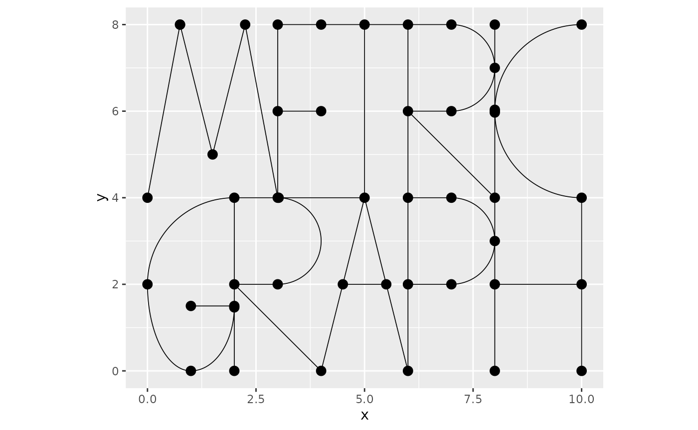
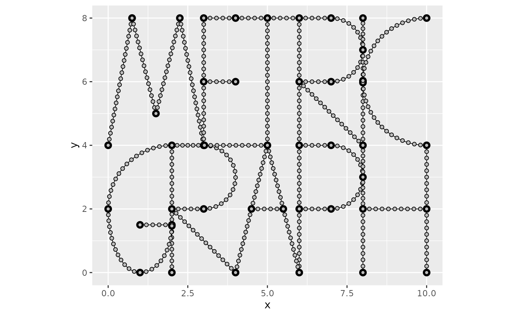
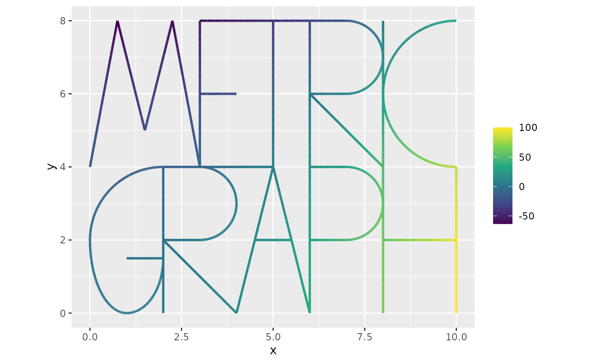
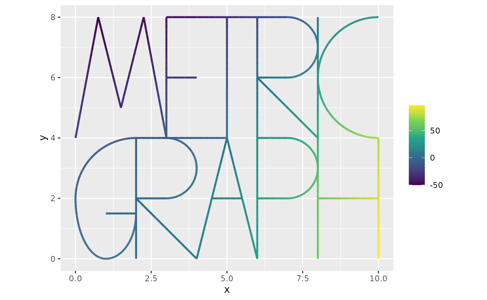
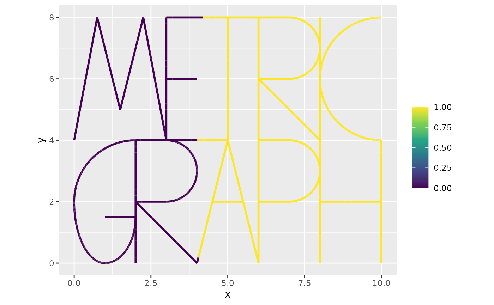
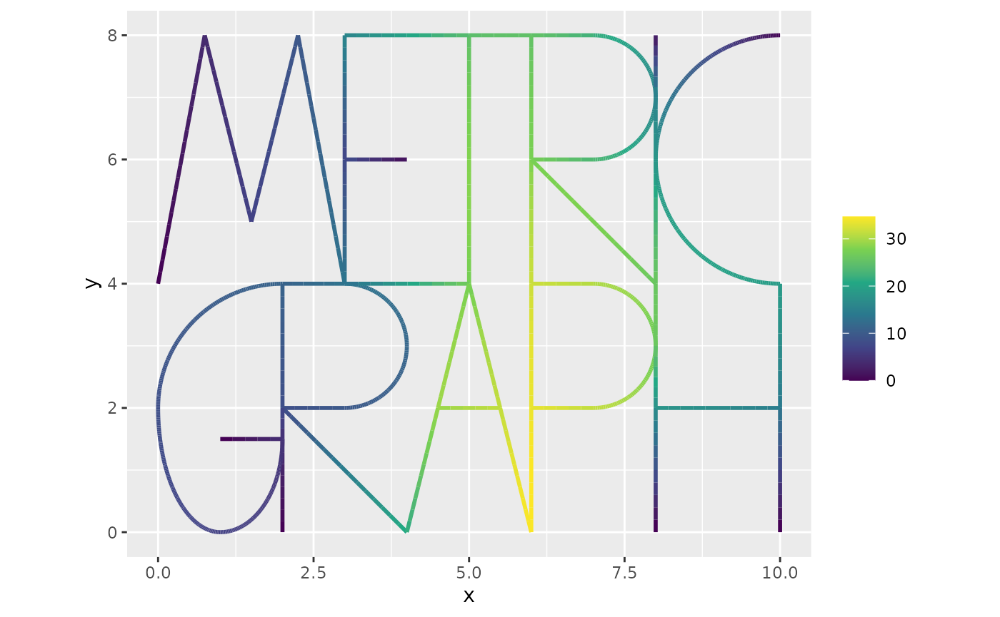
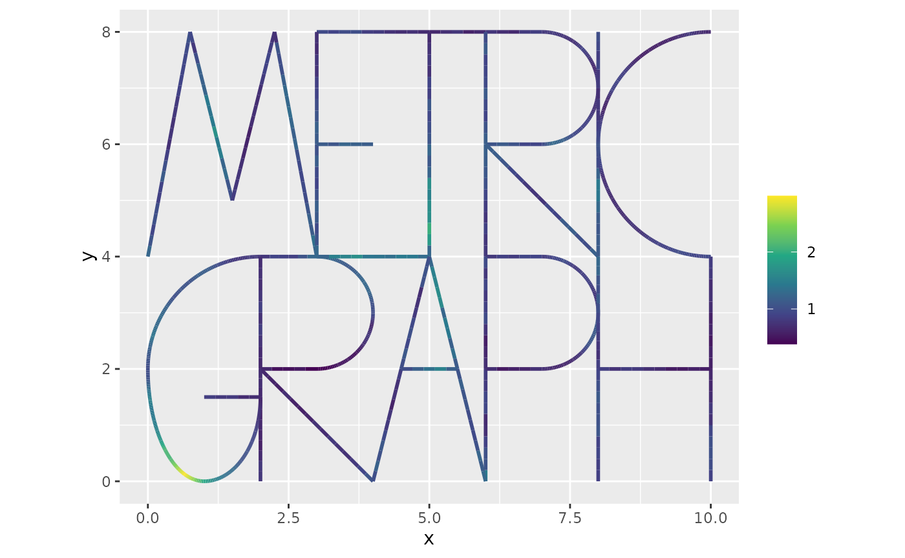
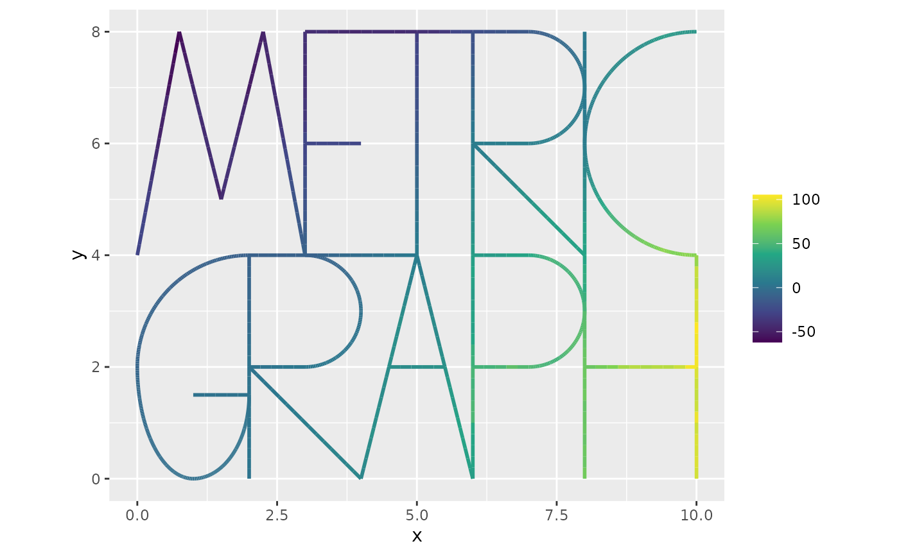

Solving PDEs on metric graphs
David Bolin
Created: 2025-03-10. Last modified: 2025-04-03.
Source:vignettes/pde.Rmd
pde.RmdIntroduction
In this vignette we will introduce how to solve some basic PDEs on metric graphs.
For details on the construction of metric graphs, see Working with metric graphs
For further details on data manipulation on metric graphs, see Data manipulation on metric graphs
Constructing the graph and the mesh
We begin by loading the rSPDE and
MetricGraph packages:
As an example, we consider the logo graph
graph <- metric_graph$new(perform_merges = TRUE,
tolerance = list(edge_edge = 1e-3,
vertex_vertex = 1e-3,
edge_vertex = 1e-3))
graph$plot()
To construct a FEM approximation of a PDE on this graph, we first must construct a mesh on the graph.
graph$build_mesh(h = 0.2)
graph$plot(mesh=TRUE)
In the command build_mesh, the argument h
decides the largest spacing between nodes in the mesh.
Example with the Helmoltz equation
As a simple first problem, let us consider solving the Helmholtz equation where the operator is equipped with Kirchhoff vertex conditions and we assume that . Discretizing the problem through a Galerkin FEM method yields a solution where are the hat functions induced by the mesh and are the weights, which solve Here is the mass matrix with elements , is the stiffness matrix with elements , and . The mass and stiffness matrices can be computed as follows
graph$compute_fem()
G <- graph$mesh$G
C <- graph$mesh$CSuppose that , where are the Euclidean coordinates of the location on the graph. We approximate this function as being piecewise linear on the mesh and compute , where is a vector with evaluated at the mesh nodes
x <- graph$mesh$V[, 1]
y <- graph$mesh$V[, 2]
fbar <- x^2 - y^2
C <- graph$mesh$C
f <- C%*%fbar
graph$plot_function(fbar, vertex_size = 0)
We now solve the system as
kappa <- 1
L <- kappa^2*C + G
u <- solve(L,f)
graph$plot_function(u,vertex_size=0)
Example with a Poisson equation
Let us now consider the Poisson equation where the operator is equipped with Kirchhoff vertex conditions at the vertices of degree and homogeneous Dirichlet vertex conditions at the vertices of degree (to guarantee a unique solution). Again using a Galerkin FEM method yields a solution where are the hat functions induced by the mesh and are the weights, which now solve The difference is now that we must handle the Dirichlet conditions. By default, the stiffness matrix is computed assuming Kirchhoff vertex conditions at all nodes. Go obtain the matrix corresponding to Dirichlet vertex conditions, we simply have to remove the rows and columns corresponding to the degree 1 vertices:
n.mesh <- dim(graph$mesh$V)[1]
ind <- setdiff(1:n.mesh, which(graph$get_degrees()==1))
Gd <- G[ind,ind]Suppose that , where are the Euclidean coordinates of the location on the graph. We again approximate this function as being piecewise linear on the mesh and compute , where is the mass matrix with elements and is a vector with evaluated at the mesh nodes
fbar <- x> 4
f <- C%*%fbar
graph$plot_function(fbar, vertex_size = 0)
We now solve the system as
f.int <- f[ind] #Get the load vector at the internal nodes
u.int <- solve(Gd,f.int) #solve for u at the internal nodes
u <- rep(0, n.mesh)
u[ind] <- u.int #add the solution to the internal nodes
graph$plot_function(u,vertex_size=0)
A problem with a random diffusion coefficient
As another example, let us consider the problem where is a Gaussian process. The only difference to the first example is that we now need to evaluate a stiffness matrix with elements By assuming that is piecewise linear on the mesh, we can write this matrix as where is a diagonal matrix with the values of at the mesh nodes on the diagonal.
Let us now simulate a Gaussian Whittle–Matérn field at the mesh nodes.
u <- sample_spde(range = 4, sigma = 0.3, alpha = 1, graph = graph, type = "mesh")
graph$plot_function(X = exp(u), vertex_size = 0)
We can now build the matrix :
Let us use the same right hand side as in the first example and solve the PDE with :
Solving a fractional-order PDE using rSPDE
Finally, let us consider solving a fractional-order version of the PDE in the previous example:
To solve this, we can use the rSPDE package, to obtain a
rational approximation of the fractional power. Specifically, we use the
operator-based approach by Bolin and Kirchner (2020), which results in
an approximation of the original PDE which is of the form
,
where
and
are non-fractional operators defined in terms of polynomials
and
.
The order of
is given by
and the order of
is
where
is the integer part of
if
and
otherwise.
Having already computed the FEM approximation of the operator
,
we can use the function fractional.operators to define the
rational approximation. For this we just have to provide the operator,
mass matrix,
,
the order of the rational approximation, and a scale factor which is a
lower bound for the eigenvalues of
.
In this case, a lower bound is given by
.
library(rSPDE)
beta <- 1.5
op <- fractional.operators(L, beta, C, scale.factor = kappa^2, m = 1)We can now solve the problem as follows
